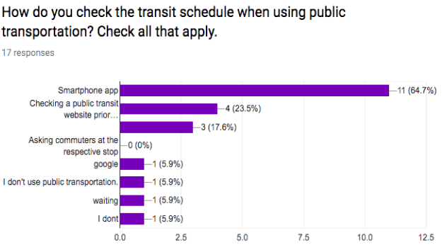
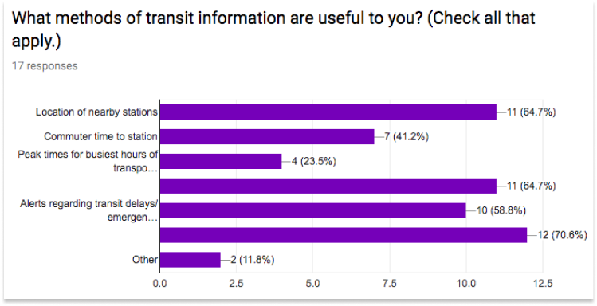

BusyBus

A mobile transit app assisting riders at the Washington & State bus stop.
UX Research | UI Design | Frontend Coding
PROBLEM
Transit officials have been receiving mass amounts of customer service complaints due to expansion of routes. The numerous bus routes that have been added to the schedule have the same stops at the same bus stop. Public transit riders are having much difficulty navigating the new system, wanting to know when the next bus is arriving and how long their ETA is.
SOLUTION
To help bus riders better track specific buses and ETA to and from Washington and State, a mobile transit app, BusyBus was developed.
ROLES
- User Research
- UX/UI Design
- Product Design
- Frontend Coding
TOOLS
- Figma
- Marvel App
- GoogleForms
- GitHub
- Atom
DELIVERABLES
- User Surveys | Personas
- Competitive Analysis
- User stories | User Personas
- Lo-Fi/Hi-Fi Wireframes
- Digital Frontend Prototype
RESEARCH & DISCOVERY
User Research
The first step of the research process was to conduct a user survey focused on the needs of bus riders.
Pain Points
Participants highlighted inconsistent transit times and inaccurate arrival times, with public transit regularly, expressing desire for more efficient communication and more vehicles for transportation.
  View User SurveyCompetitive Analysis


I was interested in what our competitors were up to when utilizing public transit. To best design for our BusyBus users mental mode and meet their expectations, I conducted a Competitive Analysis. Google Maps offers real-time data with satellite imagery to access time efficient routes to their destinations. However, this app requires internet connection, does not suggest detours, and overestimates traffic time, affecting commuter time. Moovit offers real time data, but only allows users to search within current location while requiring cellular data to filter accurate and update routes for users.
Strategy
User stories and user personas were created to highlight the main features of the product. The highest-priority stories focus on activities relating to the bus arrival times and service alerts.
Personas & User Stories
Personas

Caleb is a 20 year old college student studying Environmental Science and English at Guilford College in Greensboro, North Carolina. Though Greensboro is a college town, only 16 bus routes run Monday through Friday, ending service after midnight, with only seven routes in use on Sundays, with service ending at 10:30 on weekends. What he finds frustrating is that buses do not stick to their arrival times, do not have more than ten stops in one direction, have large arrival gaps in the evenings, and run every hour on the weekends. He would like a more navigable app that can better assist me in navigating the Greensboro transit system, especially late at night and in inclement weather.

Leah is a 29 year old graduate student pursuing her master's in Social Work at the University of Richmond while also interning part time at Richmond General Hospital. A bustling college town, she needs an app that can help me to navigate the city better. If she finds that she is late for class or work, she does not want want to rush to the bus stop only to find she has to wait a great length of time for the bus.
INFORMATION ARCHITECTURE
User Flow
Users flows were developed to outline the users’ journey when navigating the BusyBus app to view bus arrival times.

User Stories
High priority items for all users:
- • Knowing the next arriving bus
- • searching for the best route to avoid getting lost on enroute to the destination
- • consistently updated delays/service alerts
- •future times for buses in case initial bus is not taken
LO-FI MOCKUPS
Lo-fidelity wireframes were sketched and translated to a clickable prototype, followed by usability testing.

From the usability testing, I gathered three main takeaways: • Participants reported feeling that app was user friendly. • Not all participants knew that the map was interactive. • Participants were unsure where back buttons were leading to.
HI-FI MOCKUPS: ROUND #1
Through Figma, I integrated user feedback into the creation of a clickable prototype, following iOS Human Interface Guidelines to maintain visual emphasis on upcoming bus arrivals, adding a navigation bar, color consistency across all icons, and the removal of redundant text.

HI-FI MOCKUPS: PRE-CODE
Active lines are blue, rerouted lines are red, and inactive lines are displayed in a deactivated grey state to help differentiate the status of the bus lines.

BUSYBUS MEETS FRONTEND CODING
A scroll overflow and hover were added to improve map visibility while scrolling the list of arriving buses and respective arrival times.
THE FINAL PRODUCT
BusyBus is a solution for the problem of a transit system expansion that has led to a complexity of usage for the users of the transit system. This final prototype provides a simple and accurate way for riders to know arriving busses and commmute time.
GitHub Prototype